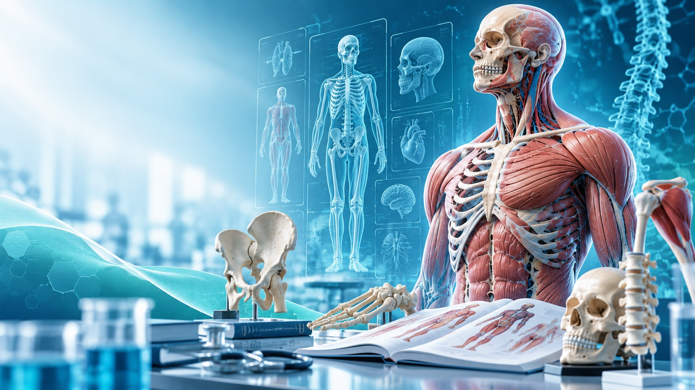
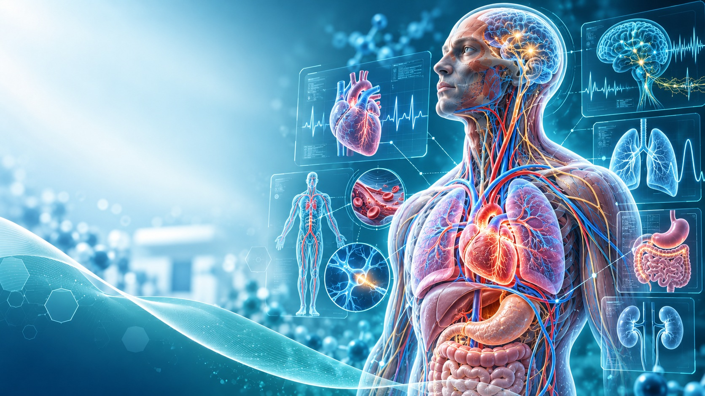

OUR MISSION
المستقبل لا يبدأ
بعرض المعلومات.
يبدأ بطريقة فهمها.
هدفنا بناء بيئة طبية تعليمية تسهّل الوصول إلى المعرفة، وتحترم الطالب ومصداقية المحتوى، وتتيح الاستكشاف دون ادعاء اعتماد أو شراكات غير مؤكدة.
أكاديمية نبض للعلوم الطبية — مبادرة تعليمية فلسطينية تربط علوم الطب بالبوابات الرقمية والتجارب السريرية التعليمية، وتصنع مسارات أوضح للوصول إلى المعرفة من غزة إلى العالم.
 FOUNDER / NABDمحمد خالد العرجاالمؤسس والمدير العام
FOUNDER / NABDمحمد خالد العرجاالمؤسس والمدير العام
نربط بين التعليم الطبي والتقنية المتقدمة في تجربة تتدرج من المساقات والمواد إلى المحاكاة والاستكشاف، وصولًا إلى فرص التواصل العلمي.
هدفنا بناء بيئة طبية تعليمية تسهّل الوصول إلى المعرفة، وتحترم الطالب ومصداقية المحتوى، وتتيح الاستكشاف دون ادعاء اعتماد أو شراكات غير مؤكدة.
مسارات وموارد لمواد الطب
محاكاة تعليمية غير تشخيصية
مواضيع ومفاهيم وأدوات
مبادرات وتواصل قيد التطوير
اختر الوجهة؛ يتغيّر العرض مباشرة لينقلك إلى المسار الحقيقي المناسب، سواء كنت طالبًا أو محاضرًا أو زائرًا يبحث عن العلم.
بوابة الطالب هي نقطة انطلاقك إلى المقررات والمواد والأنشطة التعليمية.
ادخل هذه البوابةأبواب إلى الموضوعات الأساسية في الطب. استكشف المواد، ثم راجع البوابة الأكاديمية لمعرفة ما هو مطروح للتسجيل فعلًا.

ANATOMY
PHYSIOLOGYمنظومة NABD ATLAS تربط التعلم الطبي بالمحاكاة والحالات السريرية التفاعلية. ما يُعرض هنا أدوات ومشاهد تعليمية، وليست بديلًا عن التدريب السريري المباشر أو التشخيص الطبي.
استكشف عالم NABD ATLASعالم نبض الطبي لا يتوقف عند صفحة واحدة. من مختبر القلب إلى المستشفى الافتراضي، يمكنك الانتقال إلى مساحات تعليمية قائمة لاكتشاف المفاهيم والمحاكاة. جميع هذه التجارب تعليمية وليست وسيلة للتشخيص.
نربط الأدوات التعليمية بالبحث والتوثيق؛ وتُعرض الشهادات والنتائج وفق ما يمكن التحقق منه فعليًا عبر الأنظمة القائمة.
من قراءة البحث وفهم الأدلة إلى تطوير التفكير النقدي؛ استكشف المبادرات والمصادر التعليمية ذات الصلة بالبحث العلمي.
استكشف البحث العلمي ↗الوصول إلى نظام التحقق من إتمام الأنشطة في موقع الأكاديمية.
افتح نظام التحقق ↗موارد تعليمية ومسارات متابعة وتوثيق للتعلم وتطوير المهارات.
استكشف جواز المهارات ↗ربطنا مداخل الأكاديمية بترتيب يساعد الزائر والطالب على الانتقال من اختيار المادة إلى التعلم، ثم استكشاف التطبيق والتحقق من إتمام الأنشطة عند توفره.
ابدأ من بوابة الطالبطبّق المفاهيم عبر تجارب تعليمية رقمية لا تحل محل التدريب السريري.
افتح NABD ATLASنعمل على مد جسور بين طلبة الطب في غزة ومحاضرين وأطباء وأكاديميين متطوعين من أنحاء العالم، بهدف توفير فرص لقاءات علمية عبر الإنترنت. سنعلن أي تعاون أو موعد بعد تأكيده فقط.
اكتشف المبادرة الدوليةصورة المؤسس الأصلية — محمد خالد العرجا، مؤسس أكاديمية نبض للعلوم الطبية ومديرها العام.
يقود محمد خالد العرجا تطوير أكاديمية نبض للعلوم الطبية بوصفها مبادرة فلسطينية تهدف إلى توسيع فرص التعليم الطبي الرقمي. تشمل رؤيته بوابات تعليمية متخصصة، ومسارات دراسية منظّمة، وأدوات للتعلّم السريري التفاعلي، ومبادرات للبحث العلمي والتواصل الأكاديمي.
تنطلق هذه الرؤية من غزة، بطموح مؤسسي يضع الطالب وجودة المعرفة والصدق في عرض المنجزات في قلب المشروع، مع الحفاظ على الهوية الفلسطينية للأكاديمية.
أكاديمية نبض للعلوم الطبية — طموح تعليمي فلسطيني، وتجربة طبية رقمية تنمو مع كل طالب ومبادرة ومعلومة موثقة.